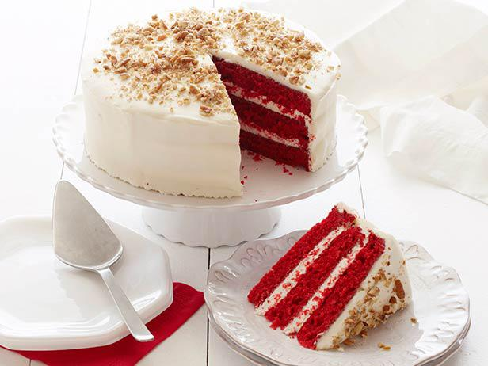

1 Preheat the oven to 350 degrees F. Lightly oil and flour three 9 by 1 1/2-inch round cake pans.
2 In a large bowl, sift together the flour, sugar, baking soda, salt, and cocoa powder. In another large bowl, whisk together the oil, buttermilk, eggs, food coloring, vinegar, and vanilla.
3 Using a standing mixer, mix the dry ingredients into the wet ingredients until just combined and a smooth batter is formed.
4 Divide the cake batter evenly among the prepared cake pans. Place the pans in the oven evenly spaced apart. Bake, rotating the pans halfway through the cooking, until the cake pulls away from the side of the pans, and a toothpick inserted in the center of the cakes comes out clean, about 30 minutes.
5 Remove the cakes from the oven and run a knife around the edges to loosen them from the sides of the pans. One at a time, invert the cakes onto a plate and then re-invert them onto a cooling rack, rounded-sides up. Let cool completely.
6 Frost the cake. Place 1 layer, rounded-side down, in the middle of a rotating cake stand. Using a palette knife or offset spatula spread some of the Cream Cheese Frosting over the top of the cake. (Spread enough frosting to make a 1/4 to 1/2-inch layer.) Carefully set another layer on top, rounded-side down, and repeat. Top with the remaining layer and cover the entire cake with the remaining frosting. Sprinkle the top with the pecans.
Cream Cheese Frosting:
Yield: enough to frost a 3 layer (9-inch) cake
7 In a standing mixer fitted with the paddle attachment, or with a hand-held electric mixer in a large bowl, mix the cream cheese, sugar, and butter on low speed until incorporated. Increase the speed to high, and mix until light and fluffy, about 5 minutes. (Occasionally turn the mixer off, and scrape the down the sides of the bowl with a rubber spatula.)
8 Reduce the speed of the mixer to low. Add the vanilla, raise the speed to high and mix briefly until fluffy (scrape down the bowl occasionally). Store in the refrigerator until somewhat stiff, before using. May be stored in the refrigerator for 3 days.


In addition to having a tiny amount of cocoa powder, red velvet cake is well-known for its bright crimson color, which is typically obtained by mixing red food coloring into the dough. Red velvet cake is my favorite because, in addition to its amazing flavor, its texture is also something to write home about. With a rich and velvety crumb, it is soft and dense. But the cream cheese frosting is what makes red velvet cake the finest of the best.In addition, compared to regular chocolate cake, it is rich, chocolaty, and incredibly buttery and moist. It also just so happens to look nice! It's the ideal combination because I adore cream cheese icing as well.